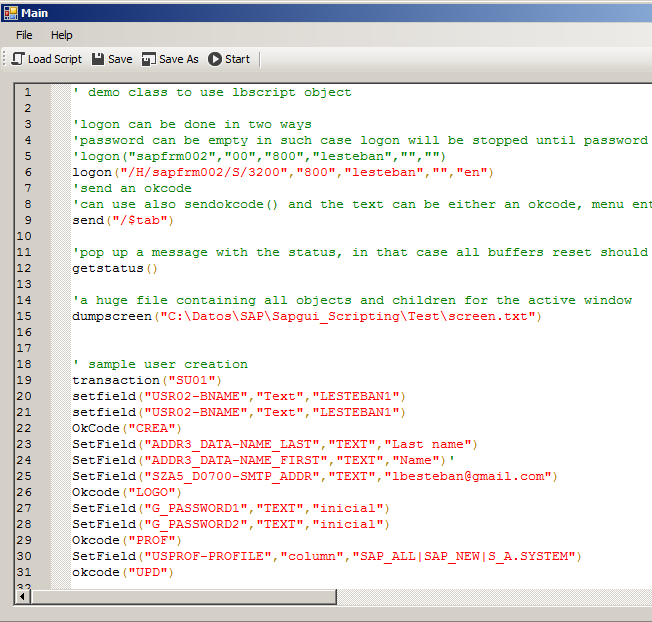
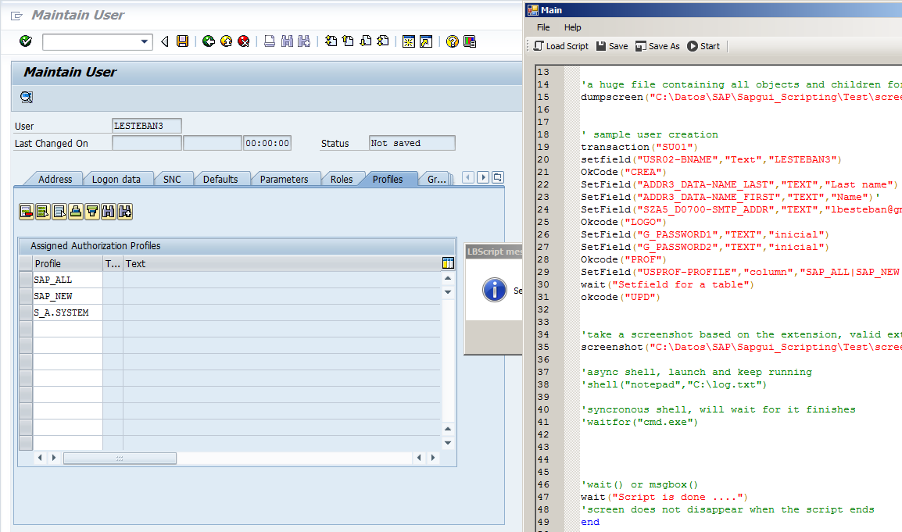
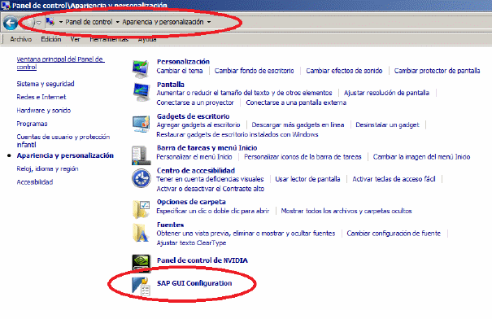
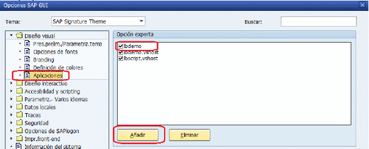
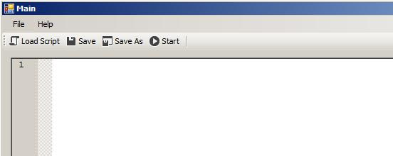
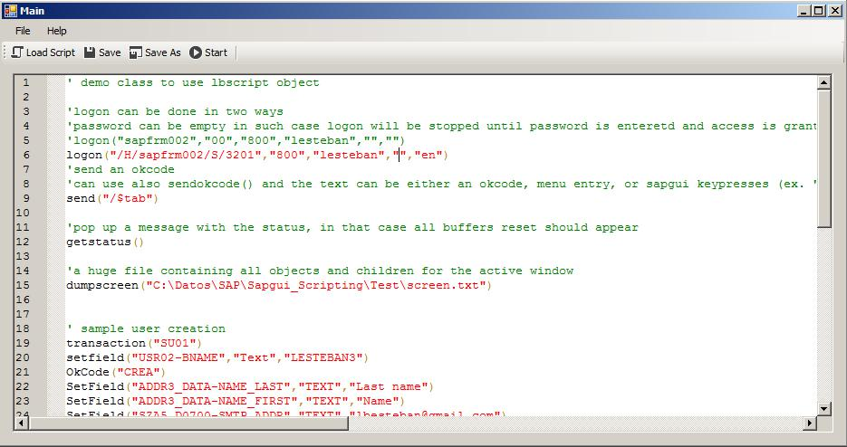

Project: https://sourceforge.net/projects/lbscript/
Note: LBScript users in Excel or VBA use the old version of this tool
 
SAP Gui family has a powerful scripting engine which can be used to automate data entry to SAP Netweaver by using the sapgui frontend, after combining this feature with the power of an interpreted simple language with a syntax like VBScript the result is a simple batch interpreter for SAPGUI commands.
To perform automatically repetitive tasks which are time consuming like create hundreds of users, roles, add multiple (and different) profiles to users, etc.
To simulate workloads
To perform fast data entry
to integrate heterogeneous solutions with SAP (actually a truck weighting scale for a cement factory was my first integration)
etc. up to you ...
It has been really useful for me to automate the daily system check for an ABAP Based SAP Netweaver system.
Have installed a working version of SAP Netweaver Frontend
Grab the latest installer file from the project https://sourceforge.net/projects/lbscript/
Set to SAPGUI scripting TRUE on your ABAP Netweaver System
Install LBDemo_Installer_<version>.exe, this will install a somehow nice frontend for the LBScript object, which is just a sapgui script interpreter
(optional, but recommended) if you skip to step six your scripting window will look kind of ugly even worse than a pre-enjoy sap sapgui window, to use the new and nice look and feel you have to grant permission to use new look&feel to sapgui control in control panel
Control panel → Look&feel or something like this
(apariencia y configuracion in Spanish)

And add the program you want to use the new visual
design

If everything is fine a shortcut to the program will be installed, start it and it will look like this

.Now press “Load script button” and select in the same folder as LBDemo is installed the VBS file, an excellent syntax highlighter will make it look just fine (thanks Scintilla.NET project team)

After filling some correct logon data line number six, just press Start button and a sapgui window will popup and begin processing the actions in there
You can contact me in contact details and if this is a feature good to have we can add this to the feature list., I still have issues with some of them so any help with undocumented features and so will be appreciated.
Check out my profile in LinkedIn
Luis Esteban → http://www.linkedin.com/in/luisesteban
Or in SCN → http://scn.sap.com/people/luis.esteban
Symptom: The interface looks awful, this sucks.
Solution: The application has to be enabled in the “SAP Configuration” in the control panel
In the main project page there are two screenshots of a user creation with fast and ugly interface and the fancy but slower one, just choose whichever you like.
Symptom: It does not work.
Solution: Check it SAPGUI is completely installed and scripting is enabled in the ABAP system via setting the correct RZ11 parameters and the user has rights to start scripts
Symptom: The script behaves differently in different computers.
Solution: Because this is only sending commands to your sapgui frontend, and your sapgui configurations differ, for example, in PFCG you can set to show the organizational assignment of a role or no to show it.
Symptom: I want a feature added to the LBScript object
Solution: If the feature is good for all us to use we can add it to LBScript class,in such case you can either request it to me via email or code it yourself and send me the code, and you will be mentioned in next releases (hoping this is not the last one)
Symptom: Man, it's hard to say but …. this web page sucks.
Solution: Yes I know, I did this web page with LibreOffice word processor, I don't like it either! But it explains what it takes for you to use the scripting tool.
Symptom: … why this ?
Solution: once you have to create 5k user profiles and create with them another 5k composite roles with the profile generator you will understand.